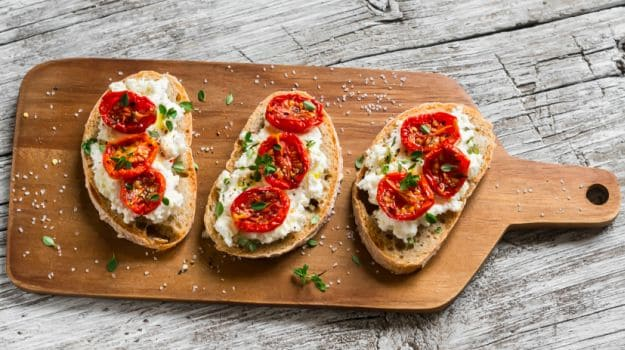

BRUSCHETTA

Incredients
- 4-5 ripe tomatoes, diced
- 1/4 cup fresh basil leaves, chopped
- 2 cloves garlic, minced
- 2 tablespoons extra-virgin olive oil
- 1 teaspoon balsamic vinegar (optional)
- Salt and black pepper to taste
- Baguette or Italian bread, sliced
- Extra basil leaves for garnish
Directions
- Step 1: Prepare the Tomatoes
- Dice the ripe tomatoes and place them in a bowl.
- Step 2: Add Basil and Garlic
- Add chopped fresh basil leaves and minced garlic to the diced tomatoes.
- Step 3: Season
- Drizzle extra-virgin olive oil over the tomato mixture.
- If desired, add balsamic vinegar for extra flavor.
- Season with salt and black pepper to taste.
- Step 4: Mix Well
- Gently toss the ingredients to combine everything evenly.
- Step 5: Toast the Bread
- Slice the baguette or Italian bread into pieces.
- Toast the bread slices until they are golden brown and crisp.
- Step 6: Top with Tomato Mixture
- Spoon the tomato and basil mixture onto the toasted bread slices.
- Step 7: Garnish and Serve
- Garnish with extra basil leaves.
- Serve the Tomato and Basil Bruschetta immediately.